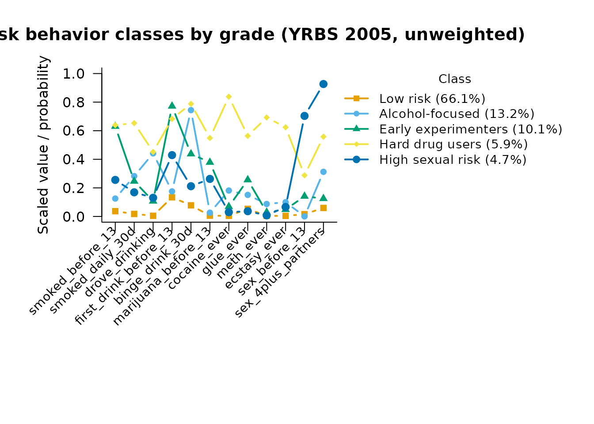

The question
A latent class model assumes the classes mean the same thing to every case in the data. When the data span groups — here, four grades of high school — that assumption is worth checking rather than taking for granted, and it splits into two separate questions. First, measurement invariance: do the twelve health-risk items mean the same thing to a ninth-grader as to a twelfth-grader, in the sense that the same class membership implies the same item-response probabilities regardless of grade? Second, if invariance holds, prevalence: are the risk classes more common in some grades than others? The second question is only interpretable once the first is settled — a prevalence comparison between groups whose items do not function the same way is comparing different things.
This uses the same yrbs2005 data as
vignette("survey_lca"), but unweighted, matching how the
textbook this pipeline follows presents it; see that vignette for the
same items analysed with the sampling design in play.
The baseline: prevalences free, measurement invariant
set.seed(1)
m_free <- fit_mixture(items, n_classes = 5, measurement = "binary",
group = grade, group_effects = "prevalence",
n_init = 20, max_iter = 2000, n_steps = 1)
m_free
#> =========================================================
#> LATENT MIXTURE MODEL
#> =========================================================
#> Classes Estimated : 5
#> Estimation Method : 1-step
#> Converged : TRUE (in 74 iterations)
#> Missing Data : 7186 / 166080 cells (4.3%) in 12 items — FIML (MAR assumption)
#> ---------------------------------------------------------
#> Log-Likelihood : -48032.87
#> Parameters : 76
#> AIC : 96217.73
#> BIC : 96790.42
#> SABIC : 96548.90
#> Rel. Entropy : 0.8046
#> Best solution : found by 6 of 20 starts
#> ---------------------------------------------------------
#> Class Weights (Sizes):
#> Class 1: 66.06%
#> Class 2: 13.17%
#> Class 3: 10.13%
#> Class 4: 5.91%
#> Class 5: 4.73%
#> =========================================================
#> Type summary(model) for structural parameters or measurement_summary(model) for item parameters.group_effects = "prevalence" pools the item-response
probabilities across grades — that pooling is the
measurement-invariance assumption — while letting each grade have its
own class sizes. A four-group, five-class fit on this many cases is
materially more expensive per start than the package’s other vignettes;
the solution above replicated across 6 of the 20 starts.
The constrained model and the omnibus test
Fitting the same model with group_effects = "none"
forces every grade to share the same class sizes as well, which is the
null hypothesis that prevalence does not differ by grade at all:
set.seed(1)
m_none <- fit_mixture(items, n_classes = 5, measurement = "binary",
group = grade, group_effects = "none",
n_init = 5, max_iter = 2000, n_steps = 1)
lr_test(m_none, m_free)
#>
#> Likelihood-ratio test for nested models
#> ---------------------------------------------------------
#> Restricted : LL = -48345.2591 parameters = 64
#> Full : LL = -48032.8661 parameters = 76
#> -2 x diff : 624.7859 df = 12 p = < 1e-16
#> The restriction is rejected: the full model fits significantly better.lr_test() takes the restricted model first and the full
model second — reversing the order is an error. With four grades and
five classes there are (4 - 1) x (5 - 1) = 12 free prevalence contrasts
between the two models, and the printed df above confirms
it. The restriction is rejected: class prevalence does differ by grade.
This reproduces the “all five latent classes” comparison from the
textbook’s prevalence-differences table.
Because group = grade is supplied, both fits above also
report a log-likelihood on the known-class scale,
metrics$ll_knownclass — that is the number that lines up
with what other programs print for this kind of model, as opposed to
metrics$ll, which is on this package’s own 1-step
scale.
m_free$metrics$ll_knownclass
#> [1] -67215.74
m_none$metrics$ll_knownclass
#> [1] -67528.13Why the per-class tests are not here
The textbook’s per-class comparisons each hold one class’s marginal probability exactly equal across grades while the other four float and renormalise. That is a nonlinear constraint on the softmax class probabilities, not a linear constraint on the underlying multinomial-logit coefficients, and mixtureEM — like most implementations — constrains the coefficients, not the probabilities directly. So that specific per-class test is not reproduced here.
The linear alternative that is available answers a closely
related question: does grade shift the log-odds of landing in a given
class against the reference class at all? add_covariates()
provides exactly that, with an omnibus Wald test across all classes at
once — but it needs an unconditional step-1 fit to start from, and
m_free does not qualify: having been fit with
group = grade, its classes already condition on grade as a
class-membership predictor, so grade cannot be added to it a second time
as a covariate. The fix is the same either way — fit the plain
(ungrouped) model and add grade afterwards:
set.seed(1)
base_fit <- fit_mixture(items, n_classes = 5, measurement = "binary",
n_init = 20, max_iter = 2000)
covs <- add_covariates(base_fit, ~ grade, data = data.frame(grade = grade))
#> Using 'ML' bias correction (set `correction` to override).
summary(covs)
#> =========================================================
#> STRUCTURAL MODEL SUMMARY
#> =========================================================
#>
#> CATEGORICAL LATENT VARIABLE REGRESSION (CLASS PREDICTORS)
#> Reference Class: 1
#> Standard errors: Bakk-Oberski-Vermunt corrected (robust step 3, hessian step 1)
#> ---------------------------------------------------------
#> OR [95% CI] P-Value
#>
#> Class 2 ON
#> Intercept 0.034 [ 0.020, 0.058] < .001
#> grade.10 4.018 [ 2.467, 6.544] < .001
#> grade.11 8.028 [ 4.893, 13.173] < .001
#> grade.12 11.636 [ 7.063, 19.168] < .001
#>
#> Class 3 ON
#> Intercept 0.196 [ 0.170, 0.227] < .001
#> grade.10 0.791 [ 0.661, 0.945] 0.010
#> grade.11 0.549 [ 0.442, 0.682] < .001
#> grade.12 0.365 [ 0.271, 0.492] < .001
#>
#> Class 4 ON
#> Intercept 0.075 [ 0.063, 0.090] < .001
#> grade.10 0.996 [ 0.790, 1.257] 0.976
#> grade.11 1.108 [ 0.879, 1.397] 0.386
#> grade.12 1.233 [ 0.975, 1.560] 0.080
#>
#> Class 5 ON
#> Intercept 0.058 [ 0.042, 0.078] < .001
#> grade.10 0.903 [ 0.643, 1.269] 0.557
#> grade.11 1.159 [ 0.823, 1.632] 0.399
#> grade.12 1.332 [ 0.924, 1.921] 0.124
#>
#> OMNIBUS TEST PER COVARIATE (effect across all classes)
#> ---------------------------------------------------------
#> Wald Chi2 df P-Value
#> grade 242.115 12 < .001
#> Note: a non-significant test beside large coefficients can be the
#> Hauck-Donner effect; confirm with wald_omnibus_test().
#> =========================================================Testing measurement invariance itself
Section 3’s pooling of the item probabilities across grades was an
assumption, not a given — it can be tested the same way the prevalence
question was. group_effects = "both" frees the
item-response probabilities by grade as well as the class sizes, and
comparing it with the invariant baseline via lr_test()
tests exactly that assumption:
set.seed(1)
m_both <- fit_mixture(items, n_classes = 5, measurement = "binary",
group = grade, group_effects = "both",
n_init = 20, max_iter = 2000, n_steps = 1)
#> Warning: The reported solution was found by 1 of 21 starts that ran to
#> convergence, out of 20 requested. EM climbs the peak it starts nearest, so a
#> maximum seen once may be the best of a small sample of the likelihood surface
#> rather than the best there is: refit with n_init = 100 before reporting.
lr_test(m_free, m_both)
#>
#> Likelihood-ratio test for nested models
#> ---------------------------------------------------------
#> Restricted : LL = -48032.8661 parameters = 76
#> Full : LL = -47528.9757 parameters = 256
#> -2 x diff : 1007.7807 df = 180 p = < 1e-16
#> The restriction is rejected: the full model fits significantly better.m_both carries a warning worth repeating rather than
hiding: only 1 of the 20 requested starts converged to the
log-likelihood reported above, so this solution has not been shown to be
the global optimum the way m_free’s was. 256 parameters
spread across five classes and four grades is a much harder surface to
search than the models earlier in this vignette, and
n_init = 20 is not enough to be confident of it here — the
package’s own advice is to refit with n_init = 100 before
reporting this specific comparison as a finding rather than an
illustration.
With N in the thousands, a likelihood-ratio test like this one also
has power to detect even a trivially small departure from invariance, so
a rejection on its own does not settle the question — it is worth
reading the information criteria alongside the test rather than the
p-value in isolation. Here the test rejects invariance decisively, which
on its own would be unsurprising at this sample size. But the two
information criteria disagree about which model is preferable: AIC
favours the fully group-varying model (it is smaller for
m_both), while BIC — which penalises the 180 extra
parameters more heavily — favours the invariant m_free.
That split is itself informative: the departures from invariance are
real enough for the likelihood-ratio test to see them at this N, but not
so large that a criterion penalising complexity thinks they are worth
the extra parameters. A researcher would want to look at which
items differ by grade — and would want the better-replicated fit above —
before deciding whether to treat the invariant model as good enough to
interpret.
Labelling
measurement_summary(m_free)
#> =========================================================
#> MEASUREMENT MODEL PARAMETERS
#> =========================================================
#>
#> CATEGORICAL PROBABILITIES
#> Indicator | Overall | Class 1 | Class 2 | Class 3 | Class 4 | Class 5
#> ---------------------------------------------------------------------------------
#> smoked_before_13 | 0.154 | 0.037 | 0.125 | 0.630 | 0.639 | 0.256
#> smoked_daily_30d | 0.120 | 0.018 | 0.282 | 0.246 | 0.653 | 0.169
#> drove_drinking | 0.105 | 0.005 | 0.442 | 0.107 | 0.452 | 0.131
#> first_drink_before_13 | 0.255 | 0.134 | 0.175 | 0.772 | 0.683 | 0.429
#> binge_drink_30d | 0.247 | 0.078 | 0.744 | 0.438 | 0.788 | 0.212
#> marijuana_before_13 | 0.089 | 0.005 | 0.026 | 0.379 | 0.549 | 0.263
#> cocaine_ever | 0.083 | 0.004 | 0.181 | 0.069 | 0.838 | 0.030
#> glue_ever | 0.116 | 0.053 | 0.151 | 0.256 | 0.564 | 0.037
#> meth_ever | 0.058 | 0.004 | 0.087 | 0.030 | 0.692 | 0.008
#> ecstasy_ever | 0.061 | 0.004 | 0.100 | 0.048 | 0.624 | 0.066
#> sex_before_13 | 0.074 | 0.016 | 0.001 | 0.141 | 0.288 | 0.704
#> sex_4plus_partners | 0.170 | 0.060 | 0.312 | 0.125 | 0.558 | 0.927
#>
#> Missing data: 7186 of 166080 cells (4.3%) across 12 items, handled via FIML (MAR assumption).
#>
#> At the boundary: sex_before_13 in class 2. These probabilities have run to 0 or 1, so the class is defined partly by an item every case in it gives the same answer to, and their standard errors are not interpretable. There are two ways on: read it substantively, since an item every member of a class answers identically is often the finding rather than a fault; or, if that parameter needs a standard error, refit with a stronger prior than the default of 1 - `bayes_constants = list(categorical = 2)` - which holds the estimate off the edge at the cost of shrinking it slightly toward the item's marginal.
#> =========================================================This fit is unweighted and grouped, and its classes do not read the
same way vignette("survey_lca")’s do — which is precisely
the point of comparing them, and why the five labels used there are not
reused unchanged here. That fit had one class high on essentially every
item; this one splits that pattern in two: class 4 is where the
hard-drug items (cocaine_ever, glue_ever,
meth_ever, ecstasy_ever) and the smoking items
peak, while class 5 is instead the class where the two sexual-risk items
(sex_before_13, sex_4plus_partners) are far
higher than in any other class, at moderate levels of everything else.
There is no single “high risk across everything” class in this solution.
Reading the table by the same descriptive rule as before — lowest on
nearly everything, highest on a specific cluster of items relative to
the rest — gives:
plot(m_free,
class_labels = c("Low risk", "Alcohol-focused", "Early experimenters",
"Hard drug users", "High sexual risk"),
main = "Health-risk behavior classes by grade (YRBS 2005, unweighted)")
Class 2 stands out on drove_drinking and
binge_drink_30d specifically; class 3 stands out on the two
early-onset items, smoked_before_13 and
first_drink_before_13, more than on the items that come
later in adolescence. Both read the same way they did in the weighted
fit, which is why “Alcohol-focused” and “Early experimenters” carry
over; “Hard drug users” and “High sexual risk” replace the single “High
risk” class because the two clusters of items no longer travel together
in one class here.